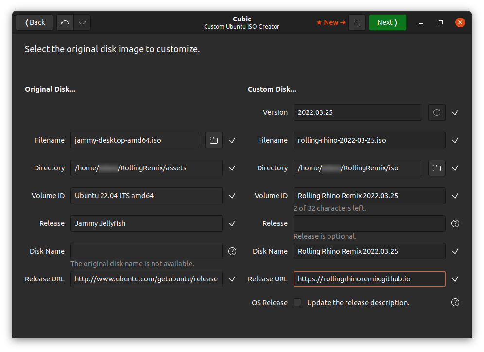

Rolling Rhino Remix - How to create your own Rolling Rhino Remix image
We are dedicated to ensuring that Rolling Rhino Remix is a fully open source operating system. This documentation, combined with all of the code hosted on our GitHub provides the information necessary to create your own image of Rolling Rhino Remix.
Installation of software and files
Before you create your very own Rolling Rhino Remix .iso you will need to install some additional software, create some directories and create some assets. The first step would be to go into your home directory with cd ~, once you have done this you can begin to create the directories necessary to make a good programming environment. mkdir rollingremix/ rollingremix/assets rollingremix/iso, these directories are recommended and are what we will use in the guide.
Once you have done this you will need to download the assets we have used from our github repository into ~/rollingremix/assets, to do this you can use this command: git clone https://github.com/rollingrhinoremix/distro ~/rollingremix/assets, it is crucial for this directory to be empty for git to be able to clone our assets into this directory.
Once this has been completed you will need to install Cubic, Cubic is a piece of software which allows you to edit an Ubuntu .iso via chroot, it is not necessary to use this software if you prefer to use other software or edit an Ubuntu image a different way, however this is the method we have adopted and as such this guide will only focus on Cubic.
- To install Cubic you should follow the steps on the Cubic page listed here
- It is important to note that Cubic is available only on systems that support PPAs, such as Ubuntu.
You will also need to ensure that Git is installed, if it isn't then you can install it via the Ubuntu package manager with sudo apt install git
Installing an Ubuntu daily build
We create our .iso images based on Ubuntu daily builds, which you are able to download here. If Ubuntu is later in the development cycle you may need to find a beta disk image or use the latest release. You should place this file in your assets folder located in ~/rollingremix/assets
Initialising Cubic
When you launch Cubic you will be asked to select a project directory. This should be the ~/rollingremix/iso folder that you have created, this is where Cubic will extract the Ubuntu filesystem and allow you to edit it directly via a command-line interface.
Once you have selected a project folder you will see a file icon next to the Filename on the left-hand side, you will need to press this icon and select the Ubuntu daily build that you have downloaded and placed in ~/rollingremix/assets Once you have done this you will need to look to the right-hand side and change the version, file name, volume ID, release, disk name and release URL. Once you have done this you will need to de-select the checkbox at OS Release.
Here is how we have changed our disk image information (please note to manually change yyyy.mm.dd into YEAR.MONTH.DAY):
- Version: yyyy.mm.dd
- File Name: rolling-rhino-yyyy-mm-dd.iso
- Volume ID: Rolling Rhino Remix yyyy.mm.dd
- LEAVE THE RELEASE BLANK!
- Disk Name: Rolling Rhino Remix yyyy.mm.dd
- Release URL: https://rollingrhinoremix.github.io
We have also provided an image of the above for you:

After this is done you will need to click the button up-top called next. This will then extract the Ubuntu file system into the ~/rollingremix/iso directory. It is recommended to have a large amount of storage space on your system while you create your disk image as the extracted Ubuntu file system is quite large.
Creating the distribution
Congratulations! You are now ready to create your very own Rolling Rhino Remix disk image! The first step you will need to do is edit the file /etc/os-release, it is recommended to use nano for editing files within the distribution. To edit the file use nano /etc/os-release and edit the line that says "PRETTY_NAME", you will want it to look like this: PRETTY_NAME="Rolling Rhino Remix".
Once you have completed this step you will need to begin to place files from ~/rollingremix/assets into the system. It is recommended to have a file manager window open and on the same desktop so you can drag and drop files from the file manager into the cubic directories (Cubic supports drag & drop really well). In the Cubic terminal you will need to go into the directory /etc/skel with the command cd /etc/skel, this directory places items in the users home directory after installation. You will need to show all hidden files in ~/rollingremix/assets with CTRL+H if you are using the default file manager from GNOME. Once this has been done you can drag the .bashrc and .sources.sh files into the directory.
After this has been done you will need to go back to your home directory with cd ~ and run apt install update && apt install upgrade
- You will not need to type sudo as you are already in root in the Cubic terminal.
After the system upgrades you will need to install an additional program, Git, this program is required for the rhino-update function that is provided by the Rolling Rhino Remix team. You can install git by typing apt install git into the Cubic terminal.
Once this is done you have almost finished, just two more additional steps! You will need to go into the backgrounds directory in Cubic with cd /usr/share/backgrounds and then drag in the rolling-rhino.png file, which is our beautiful wallpaper.
Once this has been done you will need to set the wallpaper as the default one. To do this go back to your home directory with cd ~ and then type nano /usr/share/glib-2.0/schemas/10_ubuntu-settings.gschema.override, this is the file that sets some of the Ubuntu settings by default. You will see two categories near the top that say [org.gnome.desktop.background] and [org.gnome.desktop.screensaver], there they will have a line that says something similar to: picture-uri = 'file:///usr/share/backgrounds/warty-final-ubuntu.png', this will need to be changed to say rolling-rhino.png as opposed to warty-final-ubuntu.png
Once you have done this you can save and exit, then continue to the next step.
Finishing steps
Once you have clicked the next button you will be taken to a page where you are able to select packages removed for a typical/minimal installation. We do not modify the packages removed for either install and so you can click the next button again.
After this you will be taken to another page where you are able to edit the Kernel, Preseed and Boot, we also do not make any changes here so you will be able to click the next button.
After this you can select the compression for the Linux filesystem, it is not important which you pick but we choose gzip. Once you have done this you can generate your completed disk image! The generation for the disk image can take a while and does drain battery and processing power, so buckle up!
Once the .iso is generated it is recommended to select the checkbox at the bottom of the screen which will delete all project files, it is optional however these files require sudo to delete and take up a lot of space, so it's just nice to delete it automatically :)
Congratulations on creating your own version of Rolling Rhino Remix!
Made with love from all of our developers & contributors, and a large thank you to Martin Wimpress who's Rolling Rhino script has inspired the development of this distribution. We would also like to thank Martin for his permission to use the name "Rolling Rhino Remix".
- Ubuntu and Canonical are registered trademarks of Canonical Ltd. Rolling Rhino Remix is not affiliated with the Ubuntu Project.
- Linux is the registered trademark of Linus Torvalds.